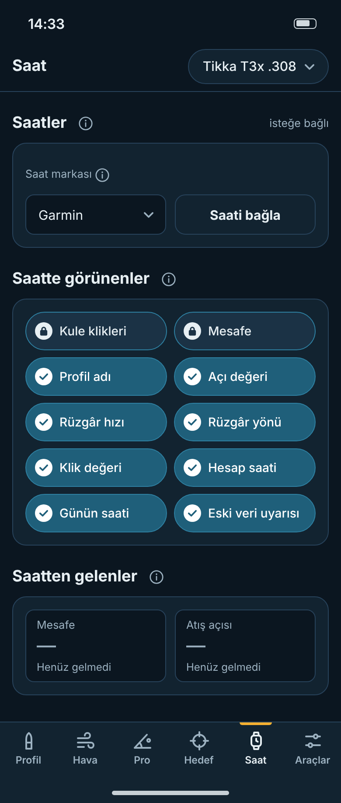
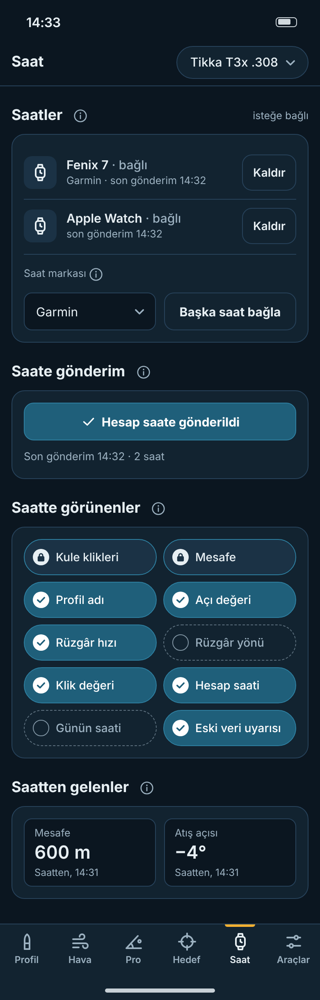
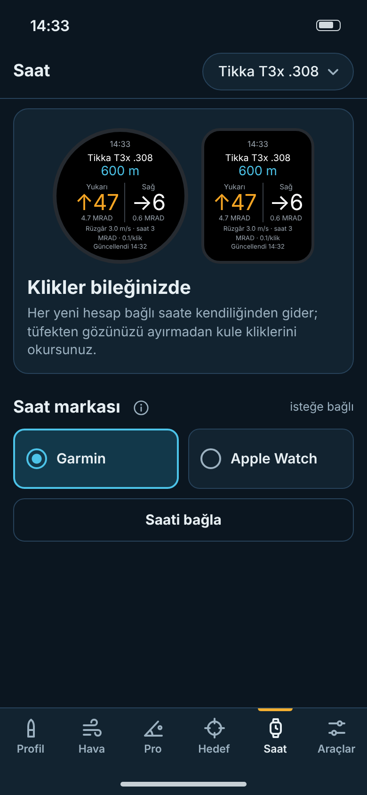
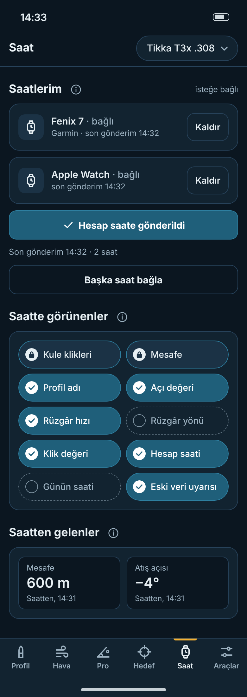
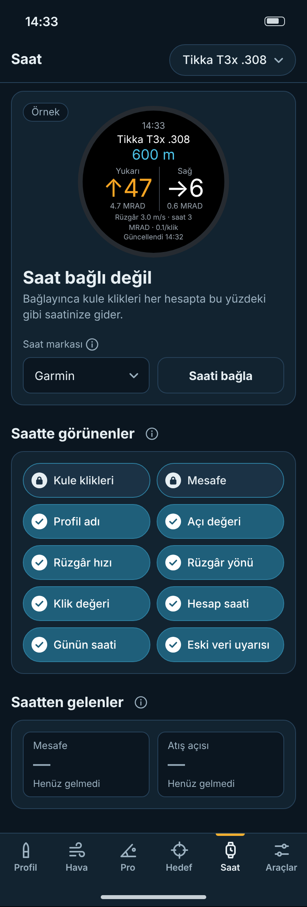
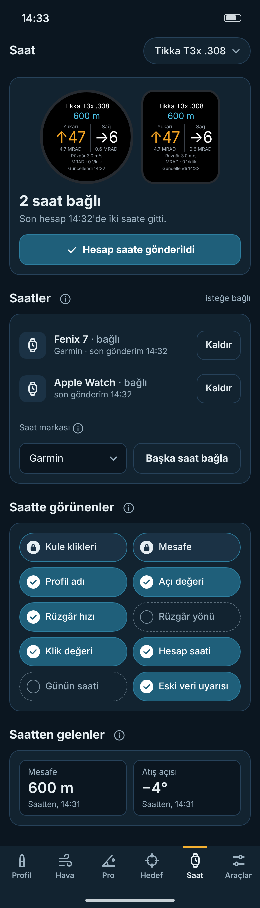

Aynı sayfa, üç farklı yerleşim. Her sütunda solda ilk açılış (saat yok), sağda Garmin + Apple Watch bağlı durum. Bütün durumlar, 320 pt denetimi ve ⓘ alt sayfaları aşağıda; canlı HTML: A · B · C.
Hava Durumu düzeni: başlık + ⓘ, altında kart. En tanıdık, en sade.


Saat yokken tanıtım + marka seçimi; bağlanınca her saat kendi kartında, ayarlar altta.


Tepede saatin şu an gösterdiği yüz, durum ve tek gönderim düğmesi. Önerilen.

